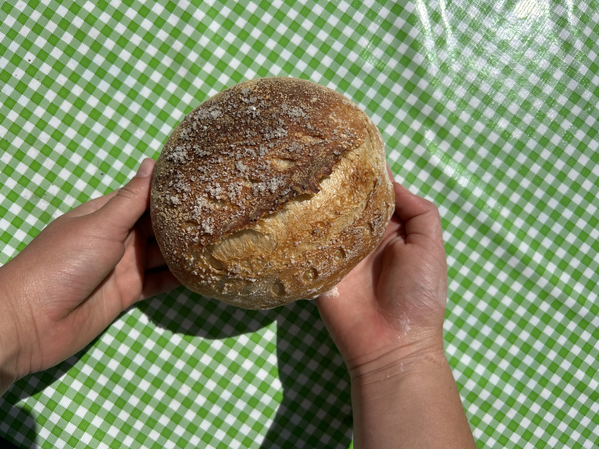
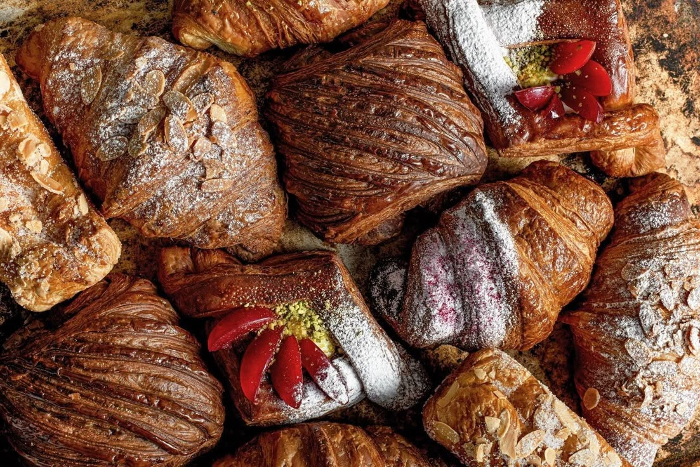
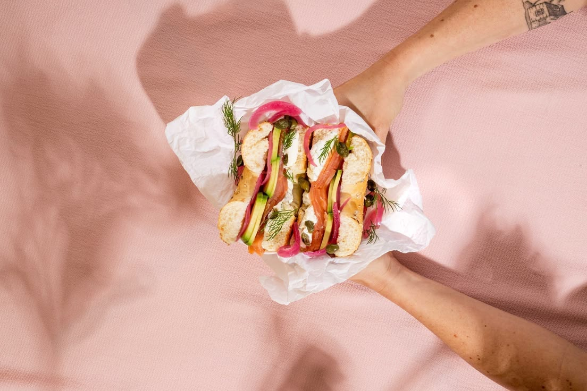
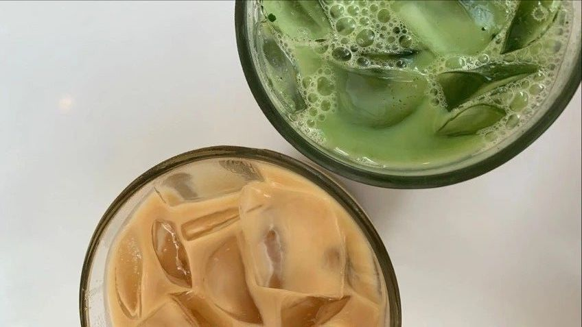

Menu
Artisan Breads
-
Sourdough Loaf
Our signature slow-fermented sourdough boasts a perfectly crispy crust and a chewy, tangy interior. Great for sandwiches or simply toasted with butter
$6.00
-
Multigrain Boule
A hearty blend of whole grains and seeds, including flax, sunflower, and sesame, baked into a golden, rustic round loaf. Nutty, wholesome, and packed with nutrients.
$7.00
-
Pumpernickel Rye
This dark, hearty bread has a deep, slightly sweet flavor, thanks to molasses, cocoa, and caraway seeds. A must-have for sandwiches or serving with smoked fish.
$7.00
-
Rosemary Focaccia
Infused with fragrant rosemary and drizzled with extra virgin olive oil, this soft and fluffy Italian-style bread is perfect for dipping in olive oil or pairing with soup.
$5.00
-
Baguette
Our traditional French baguette features a crisp, golden crust and a light, airy crumb. Ideal for charcuterie boards, sandwiches, or enjoying with butter and jam.
$4.00
-
Cinnamon Raisin Swirl
A deliciously sweet and spiced bread, swirled with cinnamon sugar and plump raisins. Toast it for breakfast or use it to make the best French toast ever.
$8.00
Pastries & Sweet Treats
-
Butter Croissant
Our classic, flaky croissant is made with layers of rich European butter, creating a crisp, golden exterior and a tender, buttery interior. A simple yet perfect treat.
$4.00
-
Chocolate Croissant
A light and crispy croissant wrapped around decadent dark chocolate, baked until golden brown, with just the right amount of sweetness.
$5.00
-
Morning Bun
A delightful pastry made with laminated dough, coated in cinnamon sugar, and infused with a hint of orange zest. Fluffy, slightly crisp, and absolutely irresistible.
$5.00
-
Berry Danish
A sweet and buttery pastry filled with smooth cream cheese and topped with fresh seasonal berries, finished with a light glaze for the perfect balance of tart and sweet.
$5.00
-
Banana Bread Slice
Moist, rich banana bread made with ripe bananas, toasted walnuts, and a hint of cinnamon. Comforting and delicious, served in thick slices.
$4.00
-
Cinnamon Roll
A soft, gooey, and perfectly spiced cinnamon roll, topped with a velvety cream cheese frosting. Made fresh daily, best served warm.
$5.00
Savory & Sandwiches
-
Avocado Toast
Freshly smashed avocado spread on toasted sourdough, topped with chili flakes, sea salt, and a squeeze of lemon. Simple, satisfying, and full of flavor.
$7.00
-
Caprese Ciabatta
Fresh mozzarella, ripe tomatoes, and fragrant basil layered on our house-made ciabatta bread, drizzled with balsamic glaze and olive oil. A fresh and classic combination.
$9.00
-
Ham & Swiss Croissant
Buttery croissant stuffed with thinly sliced ham and melty Swiss cheese, then baked until golden and crisp. A perfect balance of savory and flaky.
$8.00
-
Turkey & Brie Baguette
Roasted turkey breast paired with creamy brie cheese, crisp greens, and a touch of fig jam, served on a crunchy baguette. A perfect mix of savory and sweet.
$10.00
-
Smoked Salmon on a Bagel
Creamy whipped cream cheese, silky smoked salmon, fresh dill, and capers layered on our dark pumpernickel rye for a classic, elevated flavor.
$11.00
-
Roasted Veggie Focaccia
A warm and hearty sandwich featuring roasted zucchini, red peppers, caramelized onions, and tangy goat cheese, served on our rosemary focaccia.
$9.00
Drinks & Beverages
-
Drip Coffee
A smooth, balanced cup brewed from locally roasted beans, perfect for a classic coffee experience.
$3.00
-
Espresso
A bold and rich shot of espresso, pulled to perfection for those who love deep, strong coffee.
$0.00
-
Latte
Creamy steamed milk poured over a double shot of espresso, creating a velvety, well-balanced drink.
$5.00
-
Cappuccino
A perfect mix of strong espresso, steamed milk, and thick foam, giving it a bold and creamy texture.
$0.00
-
Matcha Latte
A rich, earthy green tea latte made with ceremonial-grade matcha and velvety steamed milk.
$0.00
-
Chai Latte
Spiced black tea blended with steamed milk and a touch of honey, delivering warmth and comfort in every sip.
$0.00